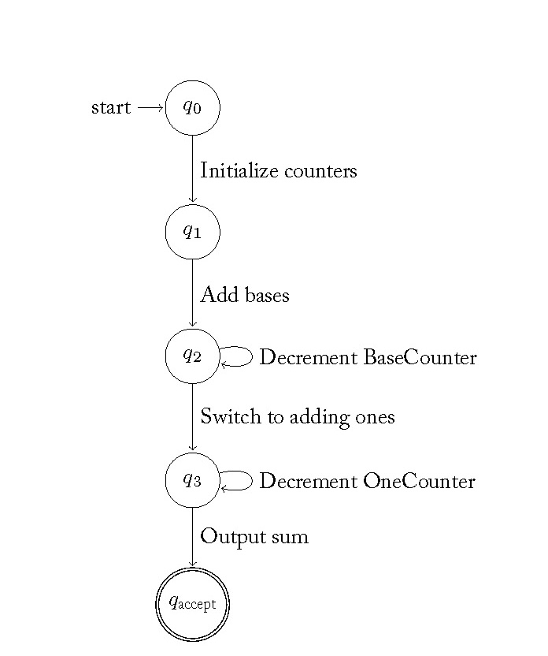
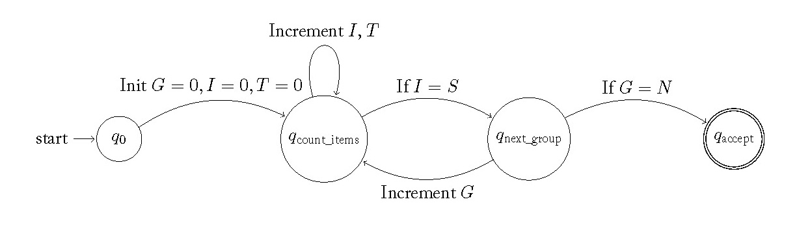
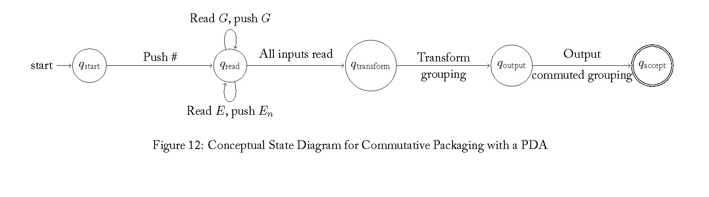

The Hermeneutic Calculator: Automatons From Counting to Arithmetic
This document presents a coherent narrative that traces the algorithmic elaboration from counting to addition, subtraction, multiplication, commutative reasoning, and division. Each section introduces an automaton that models the respective arithmetic operation, building upon the previous ones. The goal is to demonstrate how these computational models are interconnected, using consistent symbols and notations, to represent the evolving complexity of arithmetic practices and abilities.
1. Counting
1.1 Understanding the Recursive Nature of Counting
Counting is the most fundamental arithmetic operation. In base 10, counting involves incrementing digits and managing carry-over across multiple place values:
Units (Ones): \(10^0 = 1\)
Tens: \(10^1 = 10\)
Hundreds: \(10^2 = 100\)
Thousands: \(10^3 = 1,000\), etc.
The recursive process for counting follows these steps:
Increment the units digit.
If the units digit reaches 10, reset it to 0 and increment the tens digit.
Repeat this process recursively for higher place values as needed.
This recursive nature allows for counting indefinitely by reusing the same increment and carry-over logic for each digit.
1.2 Modeling Counting with a Pushdown Automaton (PDA)
A Pushdown Automaton (PDA) is suitable for modeling recursive counting due to its ability to use a stack for memory. The stack can represent digit states and manage carry-over recursively, making it an appropriate choice. Here's why:
Finite State Automaton (FSA): Lacks the memory to handle arbitrary-length counts and carry-over.
Pushdown Automaton (PDA): Uses a stack to provide additional memory, enabling nested operations like carry-over in counting.
Turing Machine: While capable, it is more complex than needed for this task.
1.3 Designing the PDA for Recursive Counting
Components of the PDA
States:
\(q_{\text{start}}\): Start state.
\(q_{\text{count}}\): Handles incrementing and carry-over.
\(q_{\text{output}}\): Outputs the current count.
Input Alphabet: \(\Sigma = \{ \emptyset \}\) (each \(\emptyset\) represents a unit to count).
Objective: Start with one addend, add bases from the other addend one by one, then add ones one by one.
Example: \(46 + 37\)
Start at \(46\).
Add tens one by one: \(46 \rightarrow 56 \rightarrow 66 \rightarrow 76\).
Add ones one by one: \(76 \rightarrow 77 \rightarrow \ldots \rightarrow 83\).
Automaton for Counting On by Bases and Then Ones (COBO)
Enter two numbers to add:

3. Subtraction
Subtraction builds upon addition and counting, requiring the automaton to handle operations like borrowing and counting backwards.
3.1 Chunking by Bases and Ones (Forwards or Backwards)
Objective: Subtract the subtrahend from the minuend by breaking the subtrahend into bases and ones and subtracting in strategic chunks.
Example: \(83 - 37\)
Split subtrahend: \(37 = 30 + 7\).
Subtract bases: \(83 - 30 = 53\).
Subtract ones: \(53 - 7 = 46\).
Automaton for Chunking by Bases and Ones (Subtraction)
Enter minuend and subtrahend:
4. Multiplication
Multiplication extends addition by representing repeated addition. The automata for multiplication build upon the addition automata, incorporating counting and grouping.
4.1 Coordinating Two Counts by Ones (C2C)
Objective: Count the total number of items by counting each item one by one, while keeping track of both the number of groups and the number of items in each group.
Example: \(3 \times 4\)
Count each of the 3 groups of 4 items individually.
Total count: \(4 + 4 + 4 = 12\).
Automaton for Coordinating Two Counts by Ones (C2C)
Enter number of groups and items per group:

5. Commutative Reasoning
Commutative reasoning in multiplication states that the order of factors does not affect the product (\(a \times b = b \times a\)). Modeling this concept algorithmically involves transforming the grouping structure, which can be represented using static digraphs.
5.1 Commutative Packaging
Objective: Demonstrate that \(a \times b = b \times a\) by reorganizing the grouping structure.
Example: \(3 \times 5 = 5 \times 3\)
Original: 3 groups of 5 items.
Reorganized: 5 groups of 3 items.
Total items remain the same: 15.
Automaton for Commutative Packaging
Enter factors to multiply:

6. Division
Division involves partitioning a set of items into equal groups, and it builds upon multiplication and subtraction.
6.1 Conversion to Groups Other than Bases
Objective: Reorganize the total number of items into groups of a specified size.
Example: Divide 24 items into groups of 4.
Total items: 24.
Groups of 4: \(24 \div 4 = 6\) groups.
Automaton for Conversion to Groups Other than Bases